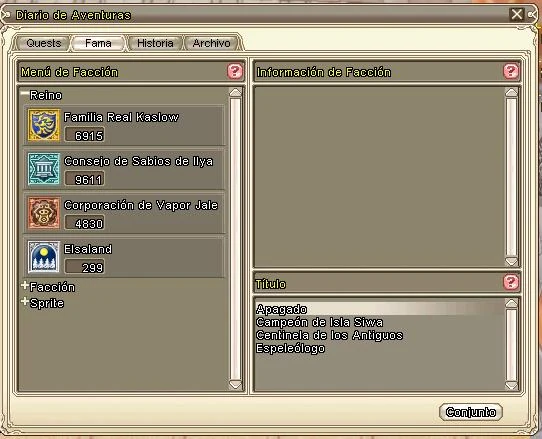

La Fama o Reputación es un recurso muy importante dentro del Grand Fantasia. Existen diferentes facciones, ciudades y grupos que requieren fama y cada una de ellas con diferentes utilidades. La fama principalmente sirve para tener acceso diferentes objetos y recipes de alquimia; a mayor nivel, más quests, más fama y mejores objetos disponibles.

Formas de Ganar Famas:
Misiones: Las misiones son pruebas que te otorgarán reputacion y una cierta cantidad de dinero conforme a tu nivel de experiencia; esa experiencia te permitirá acceder a objetos que ayudaran dentro de tu rango.
Misiones de Facción: Hay pergaminos en la tierra de Saphael regados. Cuando mandas a tu sprite a recolectar, habrá veces en las que te dará un pergamino que te informara que se necesitan ciertos artículos para determinada ciudad.
Publicaciones Quill: Normalmente estos libros, los tenderos de cada ciudad, te los venderán y en el encontraras misiones las cuales te darán premios y rango dentro de los libros de Quill.
Poderes Perdidos: Los poderes perdidos son bestigios del antiguo poder de un sprite rey, perdido durante la guerra. Liberando los poderes correspondientes a su altar, obtendrás fama con el Rey Sprite venerado en dicho altar.
Eventos: Derrotando jefes y jefes de mundo podrás ganar reputación.
Arena: Obteniendo puntos de la Arena de los Sprites o la Arena de Fuego ganarás reputación con el Corazón de Saphael.